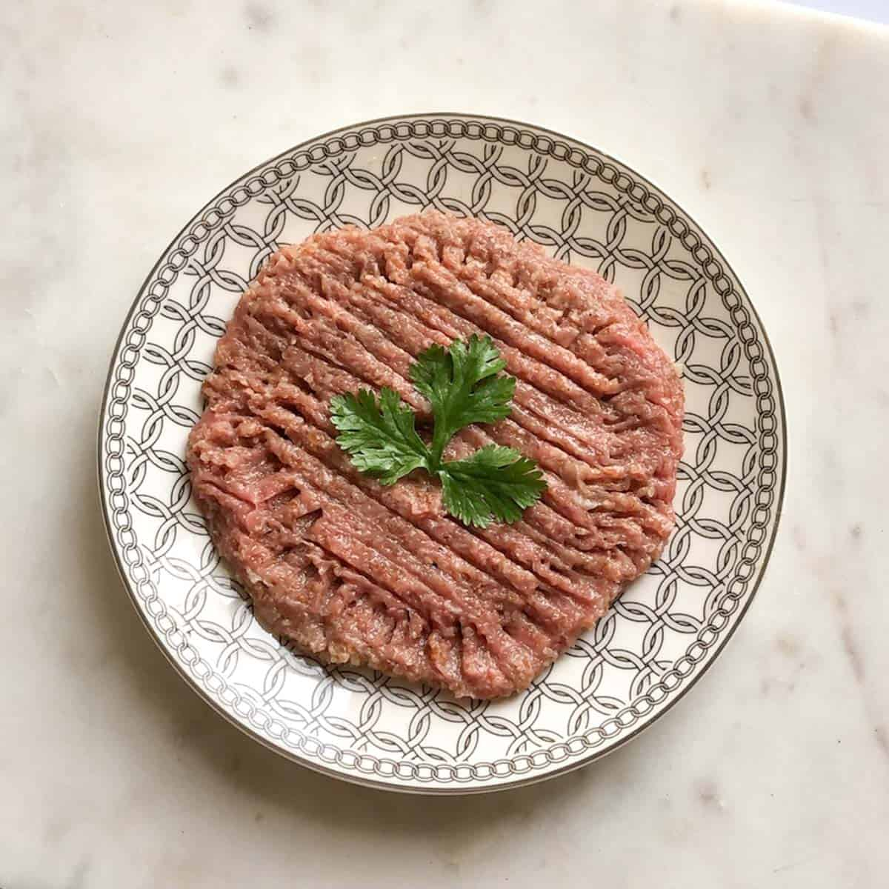

Kibbeh Nayeh
Ingredients
- Raw lamb, beef, or veal
- Fine bulgur wheat
- Onion
- Allspice
- Lebanese seven spices
- White pepper
- Ground nutmeg
- Extra virgin olive oil
Steps
- Drain the bulgar wheat. The bulgar should be soft when ready. Peel and quarter the onion.
- Split the meat into three batches. Ground the first two in a food processor and place them in a large bowl.
- Put the third batch in the food processor along with the raw onion and spices and process. Add this onion mixture to the rest of the ground meat.
- Add the bulgur to the meat and start kneading the mixture with your hands until everything is mixed together (it takes around 5-7 minutes so keep mixing). If you feel the mixture needs it, place your hands in a bowl of cold water and then mix again.
- Once everything is combined, shape the mixture into a large ball. Move it to the serving dish and start patting it down until it covers the entire serving plate.
- Use a fork to make lines across the kibbeh nayeh.
- Drizzle with olive oil. Decorate with greens or mint.